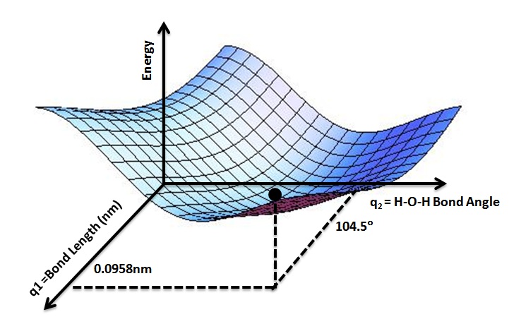
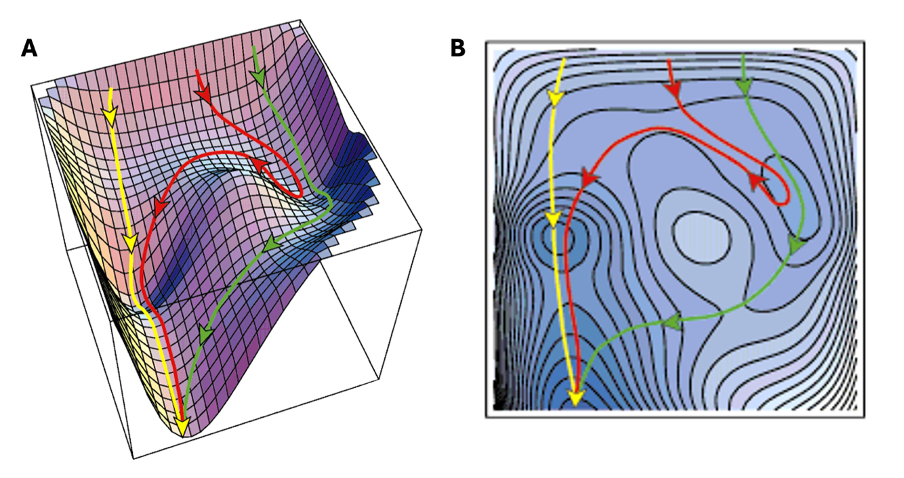

Molecular Dynamics (MD)#
The following is taken from my Wesleyan University Senior Thesis
1.1 Molecular Dynamics Theory
Molecular Dynamics (MD) simulations are computer simulations of a molecular structure over a short period of time; used to illuminate biological behavior that is challenging or inaccessible by in vivo methods. Simulating a molecule is an incalculably complex task, oftentimes quite literally, as we will see in this section. Therefore, a number of techniques have been developed to ensure our computational models are physically accurate.
In mathematics and computer science, it is customary to approach writing as inviting readers through the reasoning process (Su, 2015). I myself learned much of molecular dynamics theory in the preparation of this thesis, and I found it to be as informative as it was technical. Therefore, we will traverse this section as a series of problems and solutions to elucidate how the methods of this thesis developed.
1.1.1 Force Fields Predict Potential Energy Surfaces
The molecular structures of the ribosome used throughout this thesis were developed using cryo-EM (Abeyrathne et al., 2016). When we are given this structure, the atoms are resolved to 3.5 angstroms (Å), while a carbon-carbon single bond is 1.5 Å. Therefore, a number of atoms may not be in their true position, but rather in a position with significant energetic strain, which we measure as the total potential energy of the system. This presents us with our first problem: we must move the molecule into its true conformation, the most energetically favorable.
Doing so requires us to write a potential energy function, which will give us the energy of the system as a function of all the atom coordinates. Finding the most energetically favorable structure means finding the minimum of this function. This is often presented as a Potential Energy Surface (PES). Figure 1.1.1 shows the PES for water, where the potential energy function takes in two values, H-O-H bond angle and bond length, then returns the potential energy. By inputting two numbers and outputting one, we say our potential energy function U is a mapping \(U : \mathbb{R}^2 \to \mathbb{R}\). A stable structure would be found at an energy minimum, the lowest point on the surface.
Figure 1.1.1: Potential Energy Surface for Water. The z-axis shows potential energy as two qualities of the water molecule are varied along the x- and y-axis. The energy minimum is found at an H-O-H angle of 104.5° and a bond length of 0.0958 nm (Scopino, 2020).
For our ribosome system, that has thousands of atoms, our potential energy function U takes the x-, y-, z-coordinates of all of the atoms as input. With N atoms, this makes U a mapping \(U: \mathbb{R}^{3N}\to\mathbb{R}\), meaning we need 3N+1 axes to visualize the surface, which is impossible supposing a three-dimensional thesis reader. The lack of visualization does not, however, presuppose the lack of a minimum. A popular example is the function \(T: \mathbb{R}^{3} \to \mathbb{R}\), where T(x,y,z) is the temperature of a room at position (x, y, z) in 3D coordinates. We cannot visualize this function, as we would need all three dimensions for our x-, y-, z-positions and would have none left over for the temperature variable. Yet, this room certainly has an (x, y, z) position with the minimum temperature. Our ribosome PES is much the same; we may not be able to visualize it, but there is a configuration of atoms that begets the lowest potential energy.
We now arrive at the problem of designing our potential energy function. Ideally, our function would utilize quantum mechanics to calculate probabilistic electron densities and the interaction of each atom with all other atoms in the system. However, doing so for more than a handful of atoms becomes computationally infeasible. The solution: force fields.
Force fields utilize experimental data and some quantum mechanics to calculate a highly accurate estimate of the result of the purely quantum mechanical approach. By incorporating as many atomic interactions as possible, and making clever approximations, we can balance accuracy with computational efficiency to arrive at a sufficient heuristic. A number of factors are considered in our simulation’s force field calculations.
In lieu of electron cloud overlap and solving of the complex Schrodinger wave equation, we can treat all bonds as two masses connected by a spring. Then, we can simply use Hooke’s law of spring potential energy to calculate the potential energy induced by the stretching and compressing of all bonds in the structure.
\(U = \sum_{bonds}\frac{1}{2}k_b(r-r_0)^2\)
This is a strong start, but we can include a number of other factors. The oscillation of bond angles 𝜃, for instance, can also be modeled using Hooke’s law. We then consider torsional potential induced by the bond rotation 𝜙. Adding these to our equation gives us:
\(U = \sum_{bonds}\frac{1}{2}k_b(r-r_0)^2 + \sum_{angles}\frac{1}{2}k_{\theta}(\theta-\theta_0)^2 +\sum_{torsions}[1+cos(n\phi + \delta)]\)
Finally, we include strain due to improper dihedrals, the force that keeps some atoms in a plane to prevent chiral flips. To account for non-bonding interactions, we calculate van der Waals interactions using the Lennard-Jones potential, and electric potential energy between charged groups using Coulomb’s law. These equations come together to form a complete force field equation to estimate the system’s potential energy (Cowan, 2022).
\(U = \sum_{bonds}\frac{1}{2}k_b(r-r_0)^2 + \sum_{angles}\frac{1}{2}k_{\theta}(\theta-\theta_0)^2 +\sum_{torsions}[1+cos(n\phi + \delta)]\)
\( + \sum_{improper}V_{imp}+ \sum_{LJ}4\epsilon_{ij}\left(\frac{\sigma_{ij}^{12}}{r_{ij}^{12}}-\frac{\sigma_{ij}^{6}}{r_{ij}^{6}}\right) + \sum_{elec}\frac{q_iq_j}{r_{ij}}\)
Figure 1.1.2: Interactions considered in force fields. The force field equation considers bond length, bond angle, torsions (bond twist), and improper dihedrals.
Once the potential energy is calculated, we can use a number of techniques to move to a local energy minimum. We should note two assumptions that we have made before moving to MD simulations. First, we assume that the cryo-EM structure is similar to the native structure. Second, that the native structure lies at an energy minimum. That way, our starting structure already begins in a “well” of the PES, and we simply need to adjust to the minima. With our energy minimized structure in hand, we can move to molecular dynamics.
1.1.2 Computational Genetics
To observe the ribosome/mRNA interactions, we utilize a subsystem of the ribosome containing the decoding center (Figure 1.1.4B). As will be explained further in the Methods section, the neighborhood is a 40 Å sphere centered at the C1054 of CAR, therefore containing the A-site codon and anticodon, CAR, the +1 codon, and a number of the surrounding residues.
Our goal is to explore the allosteric effect of +1 codon identity on the ribosome. To do so, we need cryo-EM structures with various +1 codons, ideally in the same stage of translocation. However, our structures only have a +1GCU. To account for this, we induce the change computationally and observe the conformational impact. For instance, to analyze a +1CGU structure, we must exchange the +1G1 and +1C2 for a +1C1 and +1G2. We delete much of the +1G1 and +1C2 nucleotide base from our cryo-EM +1GCU structure, keeping only the atoms that are in common with the +1C1 and +1G2 we are adding. Then, we use AMBER’s tLEaP to “grow in” the two new nucleotides: +1C1 and +1G2. We can then implement the energy minimization methods discussed in Section 1.1.1 to relax the steric tension of this addition and observe the structural changes.
Recently, the Weir laboratory has found that +1 codon identity may, by itself, be too simplified a regulation model. In Sun et al., we hypothesize that codon adjacency—a pair of codons in the A-site and +1 site—provides a more nuanced regulation story. We found that +1GCU codons following an NNU A- site codon had elevated ribosome densities (indicating slower translation), more H-bonds with CAR in MD, and were overrepresented in yeast reading frames when compared to +1GCU following NNC (Sun et al., 2024). Here, we expand this analysis to novel A-site codons and tRNA anticodons to investigate the impact of A-site identity on the overall subsystem conformation.
These studies are given the name “computational genetics,” and it is an apt one. As with many genetics studies, we too are inducing a mutation and observing a phenotypic change. Our study is in silico, via a computational medium, rather than in vivo.
1.1.3 MD Unveils New Energy Minima
Our desire to explore more complex structures brings new problems, though we can view these as opportunities for more clever solutions. Unlike the PES of water shown in Figure 1.1.1, structures as complex as our ribosome have a number of conformations that are energetically stable, therefore a number of minima on the potential energy surface (Figure 1.1.3). However, our energy minimum algorithm described in Section 1.1.1 moves directly “downhill” to the local minimum. Additionally, interconversion between these wells may require overcoming a transition state that is too unfavorable.
Molecular dynamics (MD) overcomes this by heating the system to a higher-energy state and running multiple replicates to sample as many conformations as possible. Heating encompasses distributing initial velocities to all the atoms of the structure based on the Maxwell-Boltzmann law (Mozetič et al., 2019). With our heated structure now able to roam high-energy positions on the PES, we can apply molecular kinematics to quench the system into a new energy minimum. The kinematics are simply an expansion of the force field potential energy equation in Section 1.1.1, which we convert to atomic movement. The negative derivative of our potential energy U gives the force F on an atom, which we input into Newton’s second law along with the atomic mass to calculate acceleration a:
-\frac{dU}{dt} = F = ma \Rightarrow a = \frac{F}{m}
We apply each atom’s acceleration to adjust the atomic velocities and, therefore, positions at discrete timesteps. The new atomic positions create a novel structural conformation, called a frame, with an updated potential energy U for each atom. This is the cycle of MD simulation: a structure—or “topology”—gives potential energy U for each atom, which informs atomic acceleration and, therefore, atomic position in a new topology frame. We can stitch together a sequence of frames into a “trajectory,” much like the frames in a movie. The number of frames and therefore time length of each MD replicate is described further in Section 2.1.3.
Figure 1.1.3: Estimated potential energy surface for lysozyme folding. (A) The PES shows multiple wells (local energy minima) where the energy minimization may settle the structure. The arrows show multiple paths an MD trajectory may take to visit energetically favorable states (wells) and overcome transition states. (B) Top down view of the same surface, illuminating the energy minima (Dobson et al., 1998).